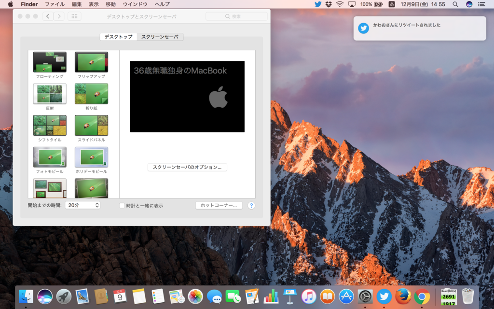

Mac のスクリーンセーバーがダサいので、カッコよくしてみました。
公開日：
この記事は だるやなぎ @daruyanagi Advent Calendar 2016 - Adventar の9日目の記事です。前日の記事は 柳 英俊（だるやなぎ）は、この服を買え でした。正直、あんな服に金を出すのは嫌です。なお、翌日の担当は未定です。
アップルのセンス、たまに謎い pic.twitter.com/7F3UtpB3ZH
— だるやなぎ（プレーン味） (@daruyanagi) 2016年12月9日
今年、Macbook を購入しました。macOS はジョブズの息吹を感じることのできる素晴らしい OS ですが、一つ欠点があります。デフォルトのスクリーンセーバーがクソダサいことです。あと、日本語入力システムとかもいまいちだと思いますが、もっとも重大な欠点はデフォルトのスクリーンセーバーがクソダサいことです。
なので、ちょっとカッコよくしてみました。
— だるやなぎ（プレーン味） (@daruyanagi) 2016年12月9日
macOS はジョブズの息吹を感じることのできる素晴らしい OS なので、環境設定のデスクトップとスクリーンセーバという画面から簡単にスクリーンセーバーをカスタマイズできます。

さすが神 OS ですね。ちなみにいつもは Bootcamp で Windows 10 を入れて使っています。Windows 向けのタッチパッドドライバーも神にしてほしいです。